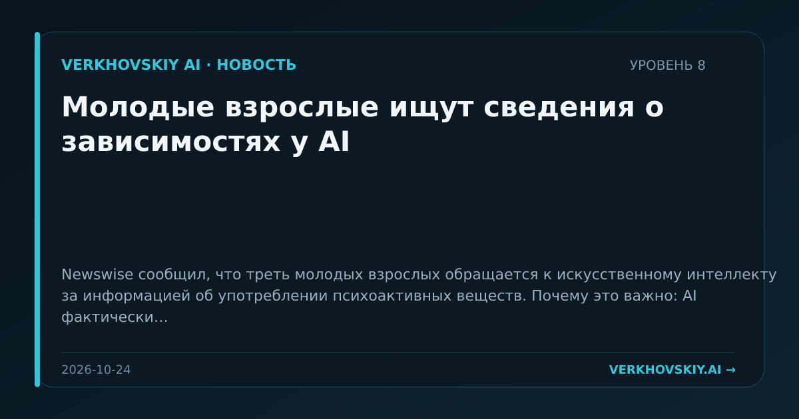

Молодые взрослые ищут сведения о зависимостях у AI
Newswise сообщил, что треть молодых взрослых обращается к искусственному интеллекту за информацией об употреблении психоактивных веществ. Почему это важно: AI фактически становится неформальным каналом медицинской и поведенческой консультации. Это расширяет область ответственности моделей на чувствительные темы, где ошибка может иметь прямые последствия для здоровья.